Version 1.74.0
Table Of Contents
Plugin manager
In older JIPipe versions, all extensions are automatically loaded during the JIPipe startup. This was changed to reduce the number of dependencies by letting the users decide which extensions should be loaded (excluding core extensions that are mandatory).
- New installations will come with the following extensions enabled: Annotations, Filesystem, Forms, ImageJ algorithms, ImageJ integration, Plots, Python, R, Strings, Table operations, Tools, Utils, ImageJ2 integration, Multi-parameter algorithms
- Existing installations will enable the following extensions: Annotations, Filesystem, Forms, ImageJ algorithms, ImageJ integration, Plots, Python, R, Strings, Table operations, Tools, Utils, ImageJ2 integration, Multi-parameter algorithms, Cellpose, CLIJ2 integration, Multi-Template matching, Weka, OMERO
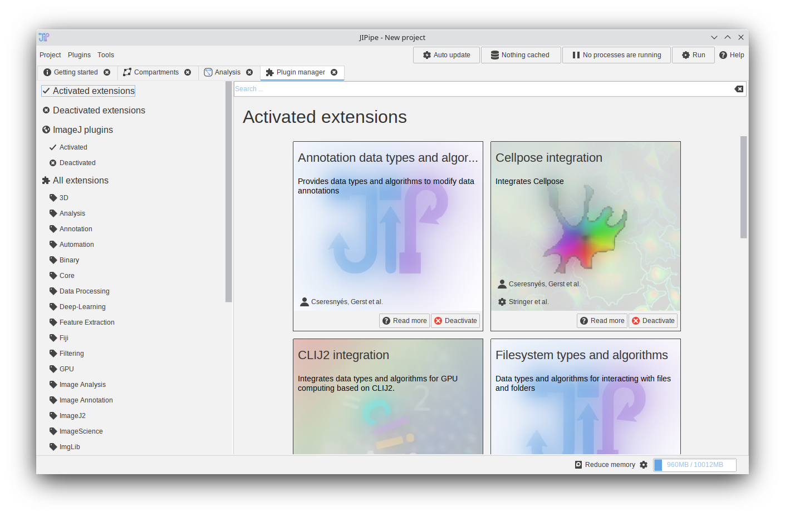
Environment EasyInstaller
In older JIPipe versions, external environments (Python, Cellpose, R, …) can be installed via prepackaged installation scripts that replicate the installation procedure that would be applied by a user. We were made aware of issues that are caused by updated to the software or differences in the system configuration. To simplify the installation of various environments, JIPipe now provides ready-to-used installation packages that can be simply downloaded and extracted via a user-friendly interface termed “EasyInstaller”.
Following EasyInstaller packages are available:
- Cellpose 2.x (Windows, Linux, macOS) CPU/GPU
- Omnipose (Windows, Linux, macOS) CPU/GPU
- Python with skimage, pandas, … (Windows, Linux, macOS)
- R (Windows)
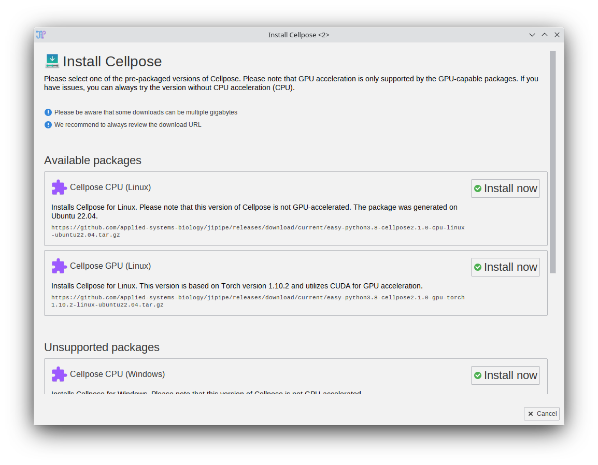
TrackMate integration (Beta)
- The feature set of TrackMate was integrated into JIPipe
- The functions are split across multiple nodes to ensure maximum flexibility
- TrackMate plugins (e.g., Cellpose spot detector) are automatically incorporated
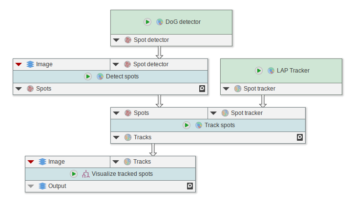
Using the TrackMate nodes
Cellpose integration
The Cellpose integration was rewritten to make use of the improved Cellpose CLI.
- New nodes designed for Cellpose 2.x
- Old Cellpose nodes will still work but are deprecated
- Cellpose EasyInstaller that provides prepacked versions of Cellpose

Omnipose integration (Beta)
Based on the improved Cellpose integration, Omnipose was integrated using dedicated nodes. Please note that Omnipose is based on Cellpose 1.x and requires a dedicated environment.
- Omnipose segmentation and training nodes
- Cellpose EasyInstaller that provides prepacked versions of Cellpose

Using the Omnipose segmentation nodes
Image processing
- “Set physical dimensions”/“Set physical dimensions from expressions” now can set the time and value units
- Node “Set physical dimensions from annotations”
- Node “Render overlay” (Renders the overlay ROI of an image)
- Node “Slice ROI list”
- Node “Sort and extract ROI by statistics”
- Node “Sort ROI list (expression)”
- Node “Object-based iterative thresholding 2D” (finds an optimal threshold based on the properties of the detected object; criteria are defined via expressions)
- Node “Flood fill” (flood fill starting at ROI locations)
- Node “Convert to centroid” (converts ROI to point ROI that contain its centroid)
- Node “Detect lines 2D (Hough)”
- New node for splitting channels (“Split channels”) that fully replicates the behavior of ImageJ’s channel splitter
- The old “Split channels” node was deprecated
- “Morphological operation 2D”: option to add border around the image before processing (border is then removed; to avoid artifacts)
- New node “Z-Project” that can properly handle 5D images and can also apply C-Project and T-Project
- The old “Z-Project” node was deprecated
- “Outline ROI” now can generate minimum bounding rectangle
- Node “Key/Value Histogram 5D”
- Node “Round float image”
- “Voronoi 2D” can now binarize the output
- “Image calculator 2D” is now properly creating Float32 output if requested
- Node “Blend images” (Blends multiple images as in an image editor)
- The “Overlay images” node was deprecated (replaced by “Blend images”)
- Node “Threshold/Value statistics 5D (fast, average)”
- Node “Threshold/Value statistics 5D (fast)”
- Node “Threshold/Value statistics 5D”
- Node “Draw scale bar”
ROI processing
There were various ROI-generating nodes with different feature sets. A new set of nodes was developed that make use of modern JIPipe API features. All nodes consume two optional inputs:
- ROI: Connect an existing ROI list to append to it. If left unconnected, a new ROI list is generated
- Reference: Connect an image to position ROI according to the image dimensions. If nothing is connected, the boundaries of the ROI provided by ROI is used, otherwise the width and height is assumed to be zero.
- Node “Draw oval ROI”
- Node “Draw rectangular ROI”
- Node “Draw text ROI”
- Append rectangular ROI, Define rectangular ROI, Append rectangular ROI (referenced), Define rectangular ROI (referenced)
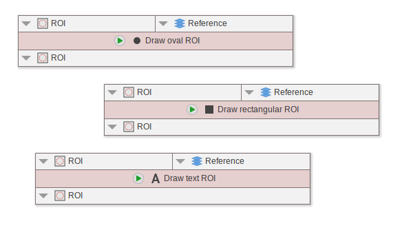
Coloc2 integration
- The functionality of Coloc2 was integrated into a node “Coloc2”.
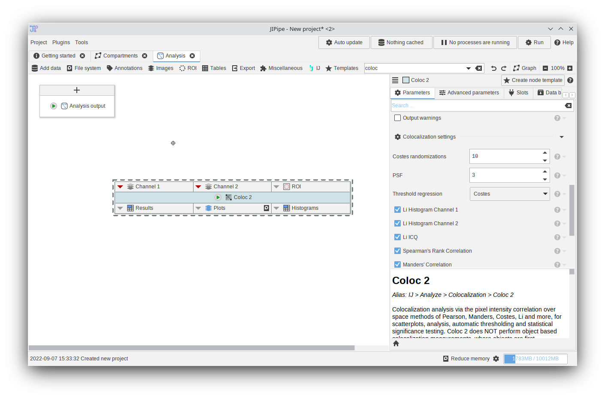
Using the Coloc2 nodes
Table processing
- Node “Add missing rows (series)”
- Node for importing tables from XLSX
- Export tables now allows export to XLSX
- Node “Table to histogram”
- “Apply expression per row” now has access to other column values
- “Apply expression to columns” now has access to other column values
- Node “Annotate data with table values”
Plotting
- New plotting nodes that are generated for each plotting type
- Node “Plot tables” was deprecated
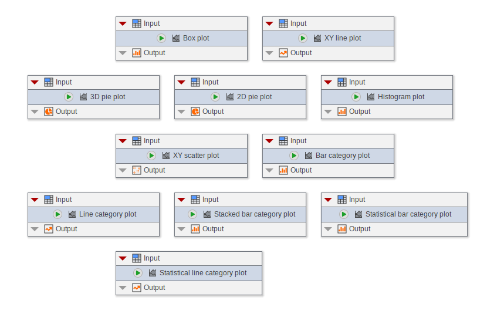
General data processing
- Node “Sort data rows (Expression)”
- Node “Override annotations”
- “Loop start”: if set to “Pass through”, the loop mode is set to “Pass through”
Parameters
- Node “Generate parameters from expression”
- The parameter table editor (“Define multiple parameters”) was redesigned and simplified
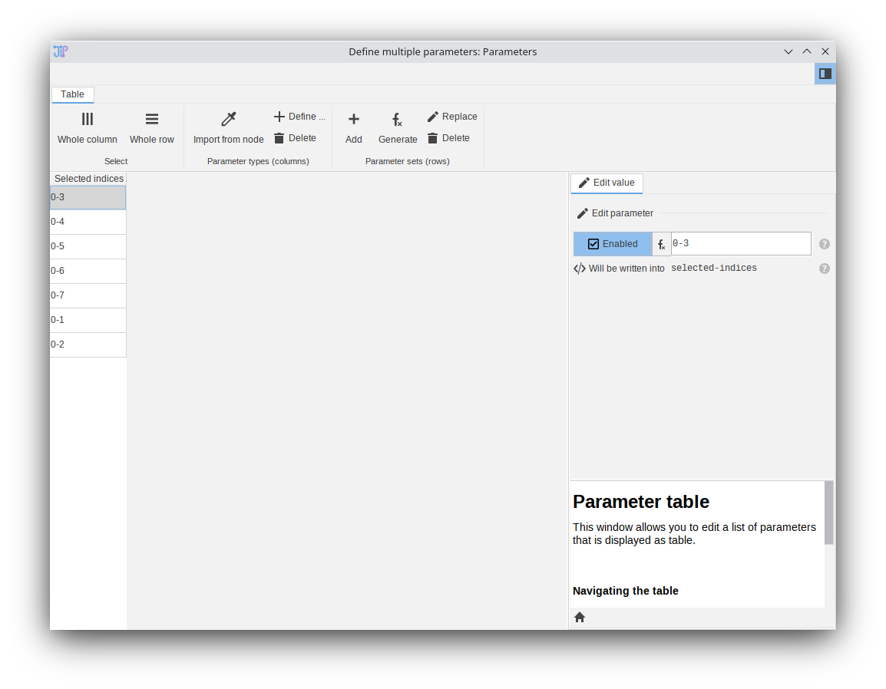
- Adaptive parameters and multi-parameter settings were moved into a dedicated panel “Advanced parameters”
- The “Advanced parameters” panel comes with documentation that explains how the features work
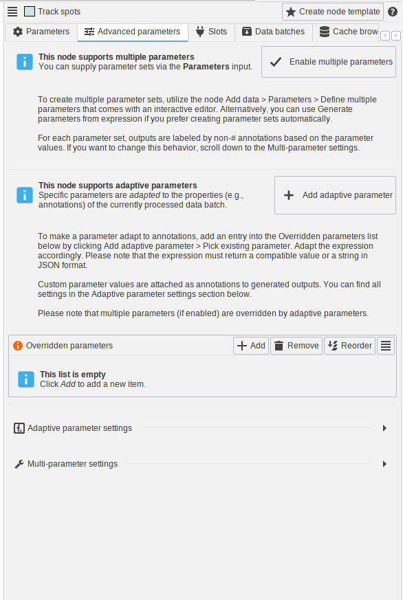
Expressions
- Escape operator to simplify the creation of functions. Example
${x + "y"}will evaluate to"x + \"y\"" - Pair operator
x: ywhich evaluates toPAIR(x, y) - Custom expression variables: various nodes allow users to define custom variables based on annotations or other properties of the processed data
- Function
IF_ELSE_EXPR(lazyIF_ELSE) - Function
FUNCTIONto define new user functions - Function
RUN_FUNCTIONto run a user function - Existing
RUN_FUNCTIONwas renamed toAPPLY_FUNCTION_TO_ARRAY - Function
SET_VARIABLES - Function
STRING_TRUNCATE - Function
SUMMARIZE_ANNOTATIONS_MAP - Function
ROUNDD(Round to specific number of decimals) - Quantity conversion functions support new units: inch, foot, yard, mile, Dalton, ounce, pound
- Function
SLICEfor slicing arrays/lists - Function
MAKE_SEQUENCE_EXPR -
GET_ITEMcan handle negative indices (accessing the -nth last item) - Function
TRANSFORM_ARRAY_CUMULATIVE - Function
TRANSFORM_ARRAY
Node examples
In previous JIPipe versions, various nodes included a “Load example” button that allowed users to learn about how to utilize the node. An issue with this functionality is that it cannot be easily discovered by users, e.g., via the search box. Additionally, examples cannot be created and distributed by users due to the reliance on Java code. The new version of JIPipe introduces a standardized node example system that can dynamically load examples from files, JAR resources, and node templates.
- Node examples that can be accessed via the “Examples” tab on selecting a node
- Search box / available nodes were improved to include node examples
- Examples for various existing nodes
- Old examples (“Load example”) were migrated to new example API
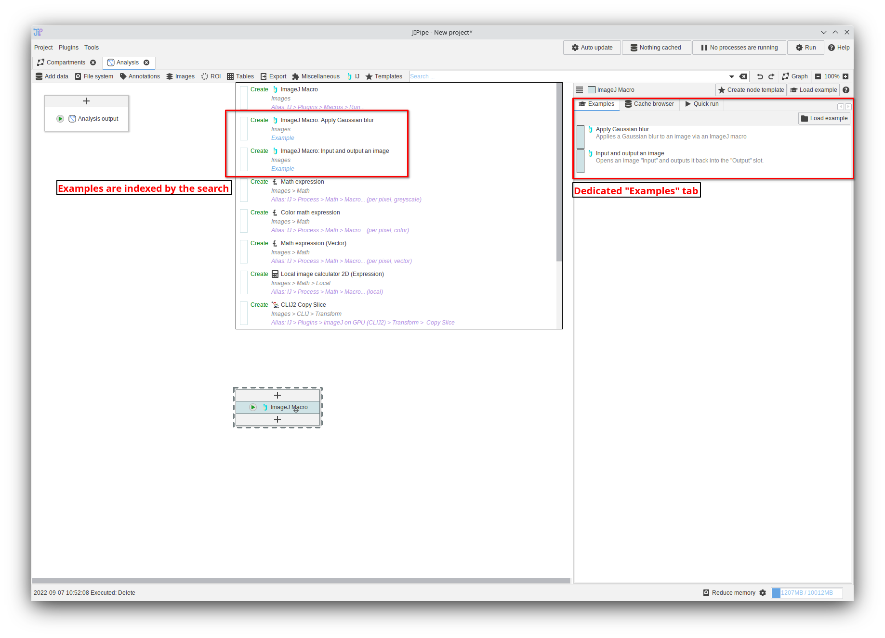
User interface
Project management
- An online-repository system was implemented that allows to download template projects from the web (if you want to add your own project as downloadable example, file a pull request to https://github.com/applied-systems-biology/JIPipe-Repositories/blob/main/project-templates/project-templates.json)
By default, JIPipe uses the repository https://raw.githubusercontent.com/applied-systems-biology/JIPipe-Repositories/main/project-templates/project-templates.json. Feel free to configure the repository list within Project > Application settings > General > Projects > Template downloader repositories
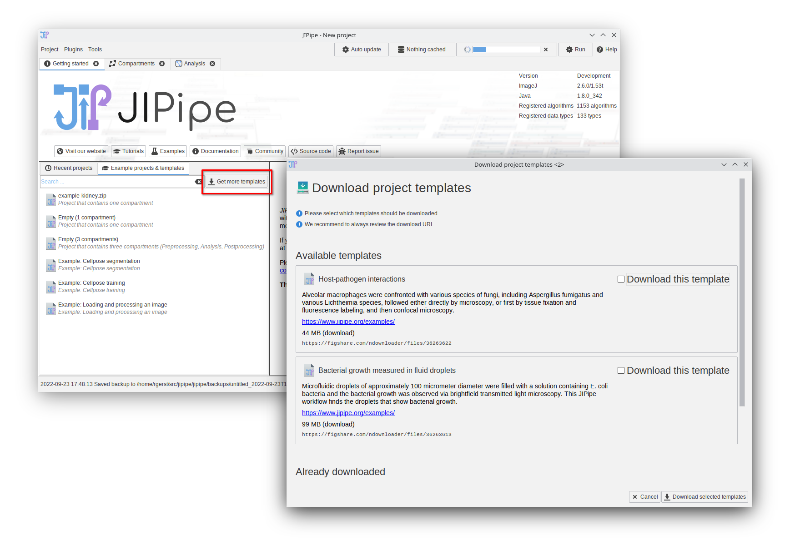
Parameters
In older JIPipe versions, the help of a parameter was displayed upon hovering the item via the mouse. This lead to issues with usability, as well as a slowdown of the interface due to the involvement of performance-intensive Java functions.
Since this version, the parameter documentation can be opened by clicking the ? icon next to the entry.
- Parameter help now is displayed by clicking the
?button - General node parameters are now separated from node-specific settings
- All list parameter editors were improved
- The “Add parameter” dialog was redesigned
- Custom/dynamic parameters now are added via a dedicated parameter editor dialog
- The parameter reference editor was redesigned
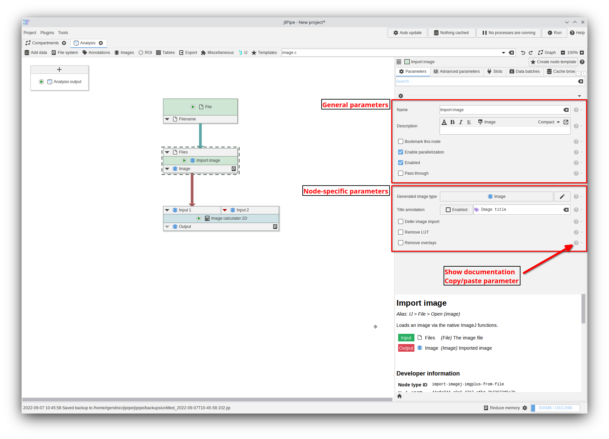
Graph editor
- Double-click compartment inputs to navigate to the associated compartment
- Overlapping nodes could not always be dragged
- Creating edges is now smarter: if there is only one input/output, it is sufficient to drag a line to the node (before: needed to drag a line to the slot). Dragged edges now “snap” to the last output.
- Resolved slow redraw on Linux
- Slots can be right-clicked to open the slot menu
- Edges are now displayed with arrow heads
- “Isolate” now has a hotkey
Compartment editor
- Compartments now can be “executed” by clicking the play button. This will update the cache / execute a quick-run for the compartment output
- Pasting compartments did not preserve the locations of the contained nodes
- Compartments now can reference parameters from their nodes
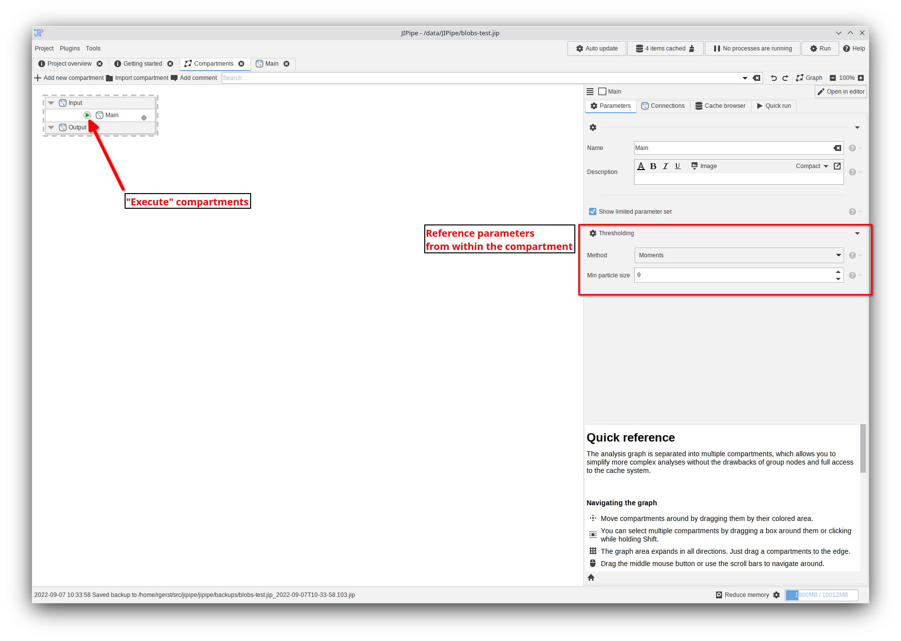
Cache browser / Results viewer
- The UI was redesigned with a Ribbon and greatly simplified
- Annotations of selected data rows can be opened as table
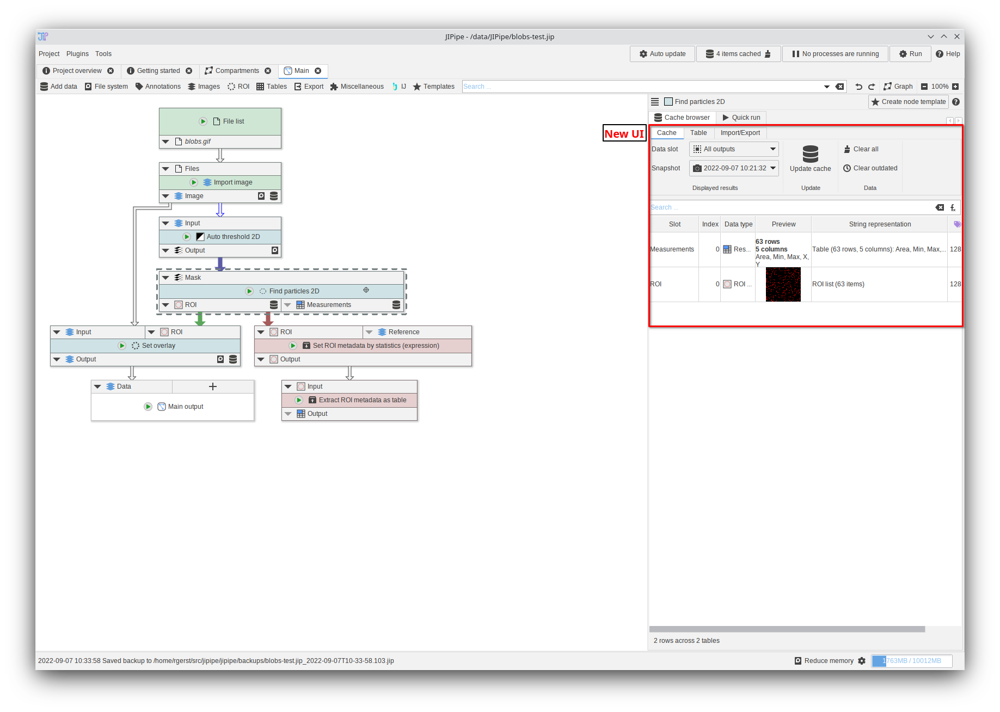
ImageJ alias menu
To facility the transition from ImageJ, a function was introduced to organize JIPipe functionality into different menu locations (alias).
Various existing JIPipe nodes were organized into a menu “IJ” that follows the structure of the ImageJ menu. For example, Images > Threshold > Auto Threshold 2D is also organized into IJ > Image > Adjust > Auto threshold ....
- Node menu
IJthat follows the structure of ImageJ - Aliases are displayed and searchable via the search box / available nodes search
- Aliases are displayed in the algorithm compendium
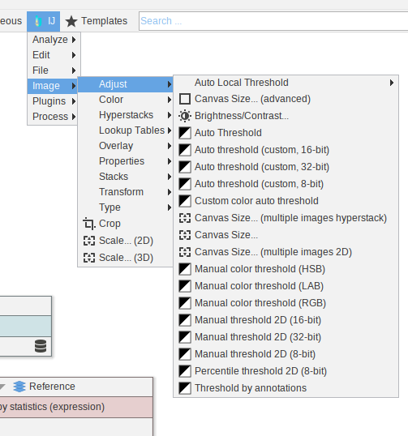
Image viewer
- Increased animation speed for channel/frame/depth slider
- Enhanced ROI rendering via a standardized component based on the “Convert ROI to RGB” node., Users have full control over many aspects of ROI rendering.
- ROI rendering as overlay (as done in ImageJ). This means that ROI renders will not pixelate on zooming into images
- Improved zooming behavior (new formula)
ROI manager
- The UI was redesigned by implementing a Ribbon interface
- The ROI manager now can measure the selected ROI
- ROI can now be selected via a mouse selection tool (“Pick”)
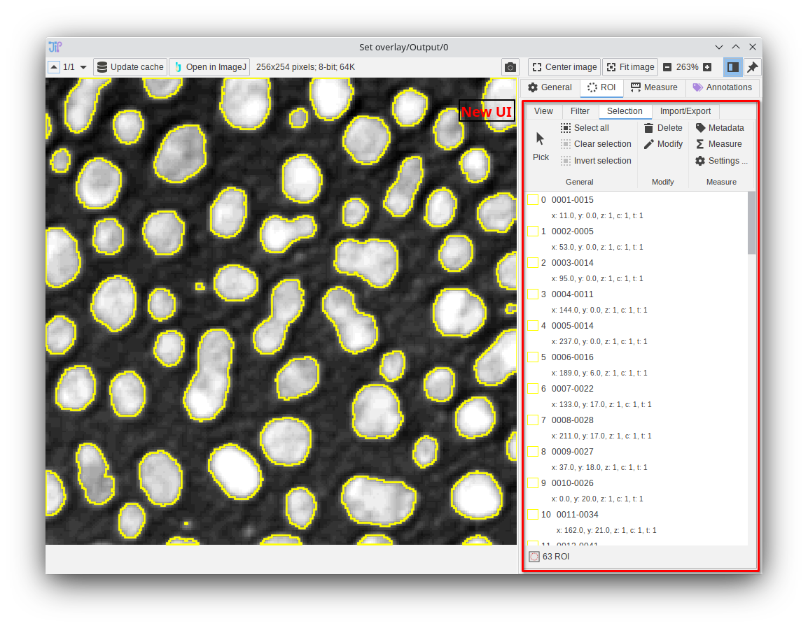
Measurement tool / mask drawer / ROI drawer
- The UI was redesigned by implementing a Ribbon interface
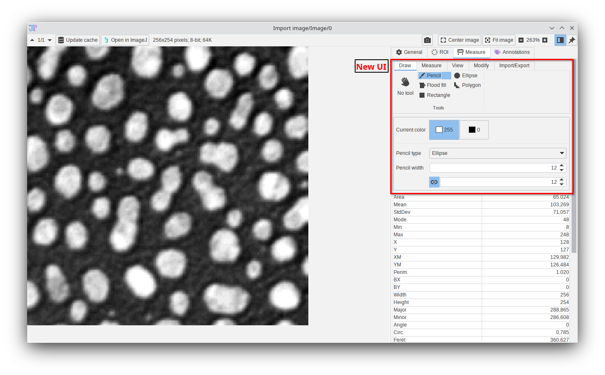
Plot editor
- The plot editor now saves ZIP files instead of directories (easier to handle)
Table editor
- The table editor was redesigned with a Ribbon UI
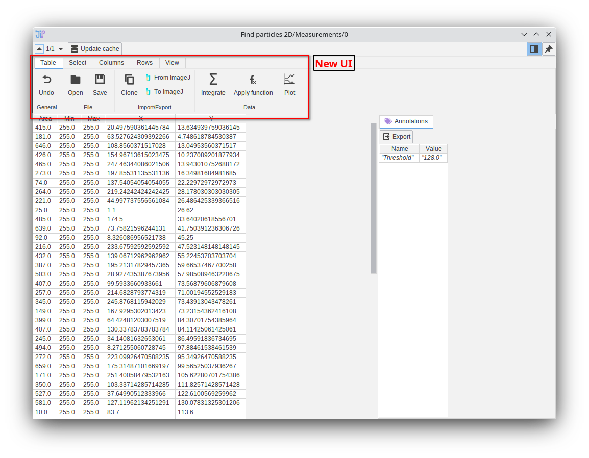
Dependency management
On loading pipelines with missing dependencies, users are prompted with dialogs to indicate that extensions are missing.
- Redesigned “Missing dependencies” dialog that allows to enable the missing extensions directly within the dialog
- Users are now informed about missing environments (Cellpose, …) on loading a project
Node templates
- You can now right-click entries in the node template editor
Data management
Due to the improved data exporter interface, some parameters were deleted. Please evaluate the parameters of “Export data”/“Export images”/“Export table”
- Greatly simplified data exporter interface (for example used in “Export data” node): functions for automated name generation were removed and merged into expressions
- Exporting data tables to *.zip
- Importing data tables from *.zip
- Tables can now exported to XLSX (table editor/cache browser/…)
- ImageJ images now save ROI overlays
Data API
- The standardized output format now saves thumbnails, thus avoiding the loading of data in the result preview window
- New API to simplify the handling of streamed storage (ZIP etc.)
Bugfixes and small improvements
Please refer to the commits in the JIPipe GitHub repository to find a list of all bugfixes and improvements.
- Default to 1 compartment projects (requested by users)
- Measurements: default to generate all available measurements
- Better detection of R
- Added various color maps from ImageJ
- The application settings UI was improved
- Various measurement nodes (“Extract ROI statistics”, “Find particles 2D”, “Extract image statistics”, …) did not support the measurement with physical units. A toggle was added (defaults to enabled) that instructs ImageJ to measure with physical sizes.
- Local threshold were no applied to stacks
- “Reorder dimensions” and “Set Hyperstack dimensions” now behave as expected
- OMERO data could not be imported due to missing default constructor
- Cellpose Miniconda installer is now deprecated due to unintended side effects that are introduced by the Miniconda installer
- Backups are now sorted properly in the “Restore backup” dialog
- “IO interface”: Pass through works as expected
Known issues
- Links within the HTML editor are currently not clickable
- Omnipose: we were so far not able to train an Omnipose model